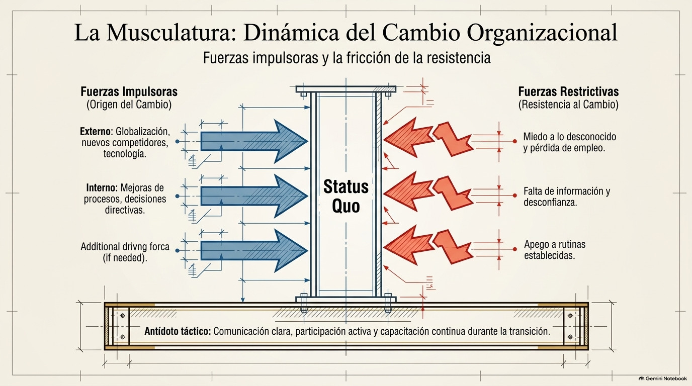
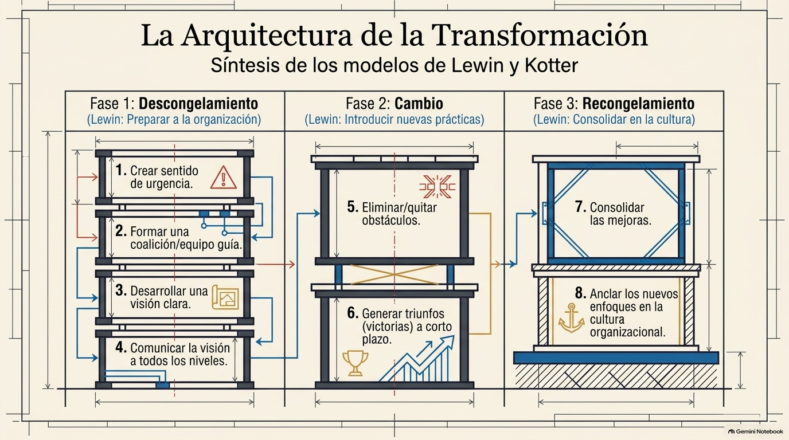
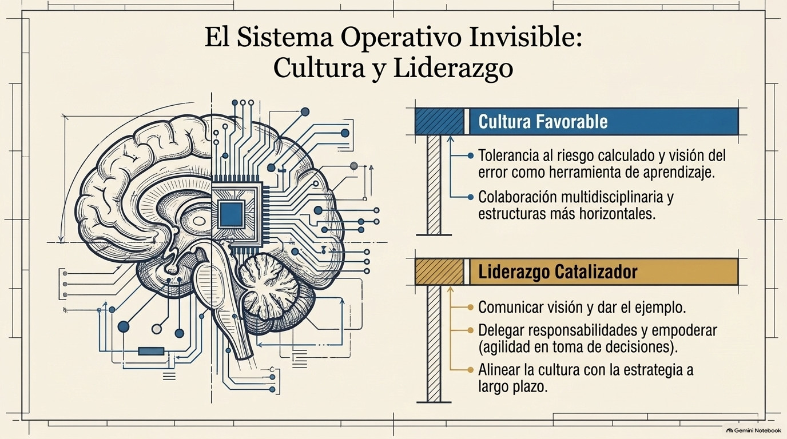

Unidad III · Tema 3.3
Manejo de Cambio e Innovación
La capacidad adaptativa para flexionarse y transformarse ante presiones externas e internas.
3.3.1¿Qué es el cambio organizacional?
El cambio organizacional es el proceso en el que una empresa modifica, ya sea de forma planeada o de forma espontánea, alguno de sus componentes: su estrategia, su estructura, sus procesos, su tecnología o su cultura. Lo hace para adaptarse a las nuevas condiciones del entorno o para mejorar su desempeño. Hoy, con la globalización, los avances tecnológicos y los gustos cambiantes de los consumidores, las empresas tienen que transformarse todo el tiempo si quieren seguir vigentes. Por eso el cambio no es algo extraordinario, sino una condición permanente de la vida empresarial, y hay que saber manejarlo bien.
3.3.2Tipos de cambio
Los cambios se pueden clasificar de varias maneras. Según su origen, pueden ser externos, cuando responden a presiones del entorno como nuevas regulaciones, avances tecnológicos o movimientos de la competencia, o internos, cuando salen de decisiones de la propia empresa para mejorar sus procesos o resolver problemas. Según su profundidad, el cambio puede ser incremental, que son ajustes poco a poco y limitados sobre lo que ya existe, o radical, que transforma a fondo la manera en que opera la organización. Y según su planeación, puede ser planeado, o sea, diseñado a propósito por la dirección, o reactivo, cuando se da como respuesta urgente a algo que nadie esperaba.
3.3.3Resistencia al cambio
Uno de los principales obstáculos al manejar un cambio es la resistencia de los colaboradores, que aparece cuando sienten que la transformación amenaza su estabilidad, sus costumbres o su posición en la empresa. Entre las causas más comunes están el miedo a lo desconocido, el temor a perder el empleo o a no poder adaptarse a lo nuevo, la falta de información sobre por qué se está haciendo el cambio, la desconfianza hacia la dirección y el apego a las rutinas. Esta resistencia puede verse de forma abierta, con quejas o rechazo explícito, o de forma más sutil, con poca motivación, ausentismo o lentitud para hacer las nuevas tareas. Por eso los directivos tienen que anticiparse y buscar estrategias para reducirla, como comunicar de forma clara y a tiempo, hacer participar a los empleados en el proceso, capacitarlos y acompañarlos durante la transición.

3.3.4Modelos y etapas para gestionar el cambio
Varios autores han propuesto modelos para implementar el cambio de forma ordenada. El de Kurt Lewin, uno de los más conocidos, tiene tres etapas. La primera es el descongelamiento, donde se hace conciencia de que hace falta cambiar y se van debilitando las actitudes que mantienen todo como está. Luego viene el cambio propiamente dicho, donde se introducen las nuevas prácticas, estructuras o tecnologías. Y al final está el recongelamiento, donde las nuevas formas de trabajo se consolidan y pasan a ser parte estable de la cultura de la empresa.
John Kotter, por su parte, propone un proceso de ocho pasos. Empieza con crear sentido de urgencia, sigue con formar un equipo que guíe el cambio, desarrollar una visión y comunicarla, quitar obstáculos y generar logros a corto plazo, y luego consolidar las mejoras. Termina con el anclaje de los nuevos enfoques en la cultura de la organización.

3.3.5Relación entre cambio e innovación
El cambio y la innovación van muy de la mano, porque innovar implica meter algo nuevo a la empresa, y eso siempre transforma la forma de trabajar, los productos o las estructuras que ya existían. Pero no todo cambio es una innovación, ya que para serlo la novedad tiene que aportar valor y aplicarse con éxito en la práctica. Una empresa que quiere innovar tiene que estar preparada para manejar los cambios que eso trae, para que las ideas nuevas no se queden en propuestas sueltas, sino que realmente se incorporen en los procesos y en la cultura de la organización.
3.3.6Cultura y liderazgo para el cambio y la innovación
Que el manejo del cambio y la innovación salga bien depende mucho de la cultura organizacional y del liderazgo. Una cultura favorable impulsa la creatividad, el aprendizaje continuo, la colaboración entre áreas y que se vea el error como parte de mejorar, mientras que una cultura rígida y con miedo al riesgo limita la capacidad de adaptarse. Los líderes juegan un papel clave al comunicar una visión clara del cambio, dar el ejemplo, motivar a los equipos, reconocer los logros y apoyar durante la transición. Además, capacitar constantemente al personal y delegar responsabilidades hace que la organización pueda asimilar ideas nuevas y ponerlas en marcha más rápido.

Genially · Manejo de Cambio e Innovación
Comprueba tu comprensión
Verifica tu dominio sobre el manejo del cambio y la innovación con la actividad interactiva.